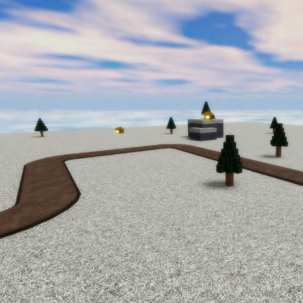

|  | |
| Length | 173 Studs (Medium) |
|---|---|
| Cliffs | 2 |
| Date Added | December 15th, 2022 |
| Built By | coreyhsGames |
Arctic is a medium/short snowy map with many trees and a couple houses. The map only has one small mountain being able to place 3-4 cliff towers. The map has multiple corners and sharp curves. This map is actually based off a old removed map from Tower Battles, Arctic.
Arctic is a snowy, tundra-like map with many trees and a couple houses. There is a single small mountain and a dirt path/track.